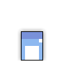
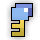

| Last updated: Exalt Version 5.13.0.0 (June 2025) |
|---|
|  |
| Dust Drops | ||
|---|---|---|
| 42-52 |
43-49 |
0 |
The Third Dimension is a high-level dungeon that drops various amount of potions such as Defense, Vitality, Wisdom, Attack, Mana and Life, as well as the entire Cuboid Necromancer ST Set and three untiered abilities.
The portal to The Third Dimension has a chance to drop from Tundra Tribe Leader and Abyssal Siren. It is also guaranteed to drop from Astral Rift, Assembled Giant and Cube God.
This dungeon must be completed to earn ‘Travel of the Decade‘, ‘Conqueror of the Realm‘, ‘Hero of the Nexus’ and ‘Realm of the Mad God’ fame bonuses.
| The Realm Eye says: |
|---|

The Third Dimension is a plane of reality above our own. It is home to many angular foes, the greatest of all being the Tesseract Goddess. Once functioning as a workshop for Oryx’s failed cubic creations, the scrap of this dimension is now governed by the Tesseract Goddess and her own evolutions. Various beings in the Third Dimension can ascend to another upon coming into contact with a greater cube, or when a cubic shadow is erased. This phenomenon is known as squaring. |
 The Third Dimension Key is available in the Nexus for 150  .
.
The The Third Dimension Guide is a work in progress.
The dungeon is a network of geometric platforms suspended over a dark void with many stars and cubic pillars floating within. The platforms often contain impassible square holes, and are connected by rectangular or trapezoidal pathways. Rotating cube decorations can be seen floating in holes or at the corners of platforms, and decorative geometric objects litter the ground.
The dungeon initially guides the player to defeat the Shadow Cube God (marked as the Shadow Cube Defender on the minimap) by finding a pink portal to its boss arena. Once that boss is slain, a pathway will appear to the second half of the dungeon, which is visually identical.
The starting room is a diamond-shaped platform with four trapezoidal holes along the edges, leaving four walkways connecting the outer edge to the center. Four destructible purple blocks are found around the center pad, which houses the Cubic Portal of Cowardice.
The treasure room of the dungeon is simply an plain square platform with four rotating cube decorations floating at its corners, empty save for the Masquarerader.
The portals required to access the bosses are found in smaller square platforms with four small rotating cube decorations stationed at the outer corners, and four destructible pillars at the inner corners. A glowing square portal in the very center emits clouds of particles and, when touched, transports the player to the arena of the currently active boss. The platform preceding the Shadow Cube God has a pink portal and decorations, while the platform preceding the Tesseract Goddess is blue instead.
Both the Shadow Cube God and Tesseract Goddess are found in large square rooms with teleporters stationed on small platforms midway along each side (3 sides for the Shadow Cube God), although the platforms with the teleporters are off-limits for the boss fight. When the respective boss is slain, the teleporters on the edges will become accessible, allowing players to go back to the previous parts of the dungeon.
Many enemies in the dungeon can undergo squaring if they come into close proximity with the “greater” enemy corresponding to themselves, which is an irreversible process that significantly increases their size and powers up their attacks to make them more dangerous. The groups of enemies that can undergo squaring are:
Once the Shadow Cube Blaster is defeated, every enemy that can undergo squaring will be permanently squared from that point onwards.
The Shadow Cube God, made up of the Shadow Cube Blaster and Shadow Cube Defender (later the Shadow Cube Overseer), is the first boss of the dungeon.
The Tesseract Goddess is the second boss in the dungeon, unlocking after defeating the Shadow Cube Blaster.
The Masquarerader is the Treasure Room boss. It appears to mimic other Treasure Room bosses’ attacks, much like how the Prismimic mimics full bosses.
| Name | Description | Items Needed | Reward |
|---|---|---|---|
| The Goddess | Defeat the Tesseract Goddess in The Third Dimension. |  |
 |
| Dimensional Foes | Slay Limon the Sprite Goddess and the Tesseract Goddess. |  |
  |
While many of the enemies in the Third Dimension are relatively easy to handle, be mindful of the Lesser Cube God’s minions and the Cubic Core. The Lightning Cube Defender can paralyze, making you easy prey for every other enemy nearby, especially the Fire Cube Overseer with its armor-breaking shotgun. The Cubic Cores, after a brief telegraph, explode in a highly-damaging square-shaped burst attack, so avoid it once it flashes.
While not necessary, it is often a good idea to look for Masquareraders, as they appear often and provide decent loot with potions and, sometimes, the whites in this dungeon. Finding them is straightforward, as you just need to go anywhere that isn’t the main path.
The Shadow Cube boss fight is not that difficult, as the attacks are predictable and easily dodgeable. Be aware of your position and you will be fine.
The Tesseract Goddess, on the other hand, requires more attention to patterns and positioning. Be aware of the telegraphs so you won’t get caught off-guard. Important to note are the cubytes, which during the Tesseract’s second form deal significantly higher damage when sat on. Avoid them at all costs.
The dungeon was designed by Aurum, a member of the “User-Generated Content” (UGC) group, and was released to the public in Exalt Version 1.3.0.0 (Dec 2020).
Before Exalt Version 5.11.0.0 (May 2025), dungeon completion gave 69-162  with 60% chance and 21-50
with 60% chance and 21-50  with 50% chance.
with 50% chance.
Before Exalt Version 5.12.0.0 (June 2025), dungeon completion gave 38-48  and 35-40
and 35-40  .
.


{kind=link}